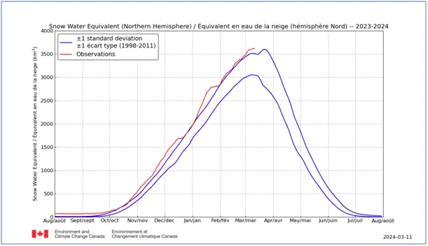
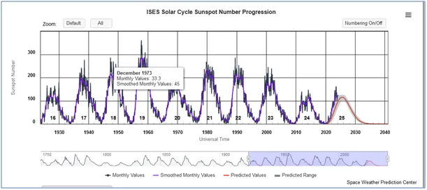

Ucieszył się starzec…, że wykupił receptę.
"Ucieszył się starzec, że przeżył marzec", takimi przysłowiami delektowaliśmy się wiosną 2020, gdy z powodu lekkiej zimy w całej Europie liczba zgonów była rekordowo niska, czemu nie dawały wiary media, mimo twardych statystyk. Były wyjątki, chodziło o państwa, które w latach 30-tych XX wieku miały z powodu wojennej polityki społecznej bardzo dużo urodzeń i ta fala w roku 2020 osiągnęła wiek lat 80, a jak to pisał psalmista (psalm 90(89)):
"Miarą naszych lat jest lat siedemdziesiąt
lub, gdy jesteśmy mocni, osiemdziesiąt; a większość z nich to trud i marność: bo szybko mijają, my zaś odlatujemy."
Chodziło o Włochy, i Hiszpanię, tam zwieziono nieszczęsnych seniorów do przepełnionych szpitali zakaźnych, w których nawet młodzi i silni nie mieli szans. W ten sposób wygenerowano "pierwszą falę", a co ciekawe nie było żadnej fali w Niemczech, gdzie też mamy legiony 80-latków, rodzonych na rozkaz Adolfa Hitlera w latach 30-tych w tempie stachanowskim. W Niemczech nie hospitalizowano masowo starców z katarem.
Niestety, u nas powtórzono ten manewr jesienią 2020, co dało ponad 200 tyś. niecovidowych zgonów "ponadnormatywnych" na typową dla Polski liczbę 400 tyś. zgonów rocznie. Pamiętamy!
Zadanie wykonane, lud przestraszony. Obecnie mamy typowy okres przeziębieniowy i usłużni lekarze wystawiają recepty na środki antywirusowe. Do antybiotyku za ok. 40 zł kaszlący pacjent dostaje receptę na "wysoce skuteczny środek antywirusowy" za bagatela... 90 zł. "Intresz szę kręczi!"

Marzec to okres przełomowy, po przesileniu wiosennym, pod koniec miesiąca śniegu w Arktyce powinno ubywać, ale póki co jego ilość bije kolejne rekordy i na koniec sezonu przyspiesza.

Słońce niestety mało aktywne, co potwierdza się z moimi obliczeniami, że kolejne dekady będą chłodniejsze na Ziemi przez duże zachmurzenie. W Polsce mamy "strefę przejściową" klimatów i na wschodzie jeszcze będzie znacznie chłodniej niż na Śląsku i zachodzie, w Suwałkach jeszcze się zabieli i kto wie, ile to razy do maja.
Paweł Klimczewski